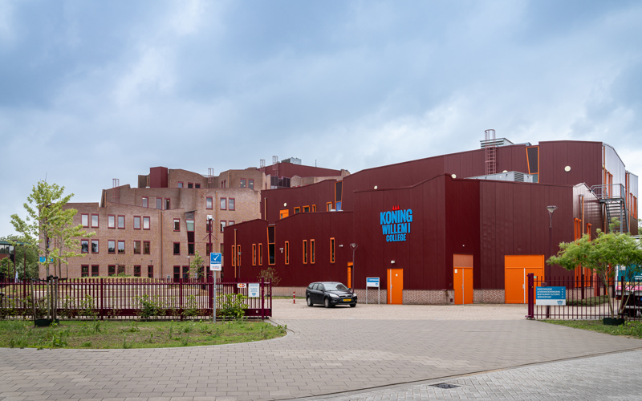

Koning Willem 1 College
Op dit moment doe ik de opleiding "Software Developer" in Oss. Ik heb het hier erg naar mijn
zin omdat ik het prettig en mooi vind om te coderen en te programmeren. het mooie er aan vind ik
dat je net echt kunst aan het maken bent. Zoals je zit zit ik op dit moment nog in de basics maar
ben ik al snel weer nieuwe dingen aan het leren, om het steeds beter te kunnen doen.
Ik ben van plan om na mijn opleiding mogelijk "Front-end Devlopment" te gaan doen, omdat ik
het toch best wel leuk vind om te doen. Sowieso als school project al, maar dadelijk al helemaal als
mijn werk. Ik vind persoonljk ook die levends style heel erg fijn, omdat je bij veel bedrijven thuis
en op kantoor kan werken. Dus er is dan ook afwisseling, en dat vind ik dan best wel fijn om te hebben.
Voor dat ik met mijn huidige opleiding begon heb ik nog een andere opleiding afgerond. Namelijk
"IT Allround System and Devices". Deze heb ik ook in oss afgerond. Daar heb ik dingen geleerd Zoals
het omgaan met windows 10 servers en hoe ik computer vanaf onderdelen helemaal tot een werkde computer
kon bouwen. Hierbij heb ik dan ook stage gelopen bij Levix Oss. Hier heb ik dan anderhalf jaar stage gelopen,
om te leren hoe ik daar computer kon bouwen en installeren. Ik heb uiteindelijk voor mijn eindcijfer daar
dan ook een 9,5 voor gekregen omdat het super goed ging. Ik heb daar ook vooral geleer hoe ik goed sociaal om
kan gaan met klanten en met mijn collega's natuurlijk.
Na mijn stage heb ik toen exames gedaan waarvoor ik ook allemaal ben geslaagd, hierdoor heb ik nu vrijstelling
voor een aantal vakken zoals "Keuzendeel". Daarbij kan je bijvoorbeel denken aan vakken zoals: Innovaties en Burgerschap.
Ik heb het daar ook erg naar mijn zin gehad en daarom heb ik er voor gekozen om hier mijn andere opleiding ook
te vervolgen en deze na 3 jaar ook af te ronden.

